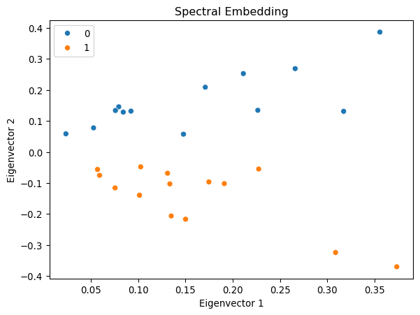
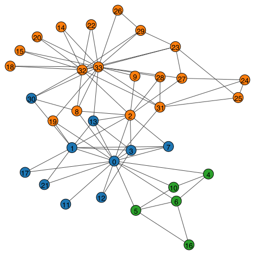

import numpy as np
import igraph
import matplotlib.pyplot as plt
import seaborn as sns
# Load the karate club network
g = igraph.Graph.Famous("Zachary")
A = g.get_adjacency_sparse()
# Get community labels (Mr. Hi = 0, Officer = 1)
labels = np.array([0, 0, 0, 0, 0, 0, 0, 0, 1, 1, 0, 0, 0, 0, 1, 1, 0, 0, 1, 0, 1, 0, 1, 1, 1, 1, 1, 1, 1, 1, 1, 1, 1, 1])
g.vs["label"] = labels
# Visualize the network
palette = sns.color_palette().as_hex()
igraph.plot(g, vertex_color=[palette[label] for label in labels], bbox=(300, 300))Network Embedding Concepts
In this section, we implement the embedding methods discussed in the concepts section.
1 Data Preparation
We will use the karate club network throughout this notebook.
2 Spectral Embedding
Example: Spectral Embedding with Adjacency Matrix
Let us demonstrate spectral embedding with the karate club network.
# Convert to dense array for eigendecomposition
A_dense = A.toarray()# Compute the spectral decomposition
eigvals, eigvecs = np.linalg.eig(A_dense)
# Find the top d eigenvectors
d = 2
sorted_indices = np.argsort(eigvals)[::-1][:d]
eigvals = eigvals[sorted_indices]
eigvecs = eigvecs[:, sorted_indices]
# Plot the results
fig, ax = plt.subplots(figsize=(7, 5))
sns.scatterplot(x = eigvecs[:, 0], y = eigvecs[:, 1], hue=labels, ax=ax)
ax.set_title('Spectral Embedding')
ax.set_xlabel('Eigenvector 1')
ax.set_ylabel('Eigenvector 2')
plt.show()/Users/skojaku-admin/miniforge3/envs/advnetsci/lib/python3.11/site-packages/matplotlib/cbook.py:1709: ComplexWarning: Casting complex values to real discards the imaginary part
return math.isfinite(val)
/Users/skojaku-admin/miniforge3/envs/advnetsci/lib/python3.11/site-packages/matplotlib/cbook.py:1709: ComplexWarning: Casting complex values to real discards the imaginary part
return math.isfinite(val)
/Users/skojaku-admin/miniforge3/envs/advnetsci/lib/python3.11/site-packages/pandas/core/dtypes/astype.py:133: ComplexWarning: Casting complex values to real discards the imaginary part
return arr.astype(dtype, copy=True)
/Users/skojaku-admin/miniforge3/envs/advnetsci/lib/python3.11/site-packages/pandas/core/dtypes/astype.py:133: ComplexWarning: Casting complex values to real discards the imaginary part
return arr.astype(dtype, copy=True)
Interestingly, the first eigenvector corresponds to the eigencentrality of the network, representing the centrality of the nodes. The second eigenvector captures the community structure of the network, clearly separating the two communities in the network.
Example: Modularity Embedding
We can use the modularity matrix to generate a low-dimensional embedding of the network.
deg = np.sum(A_dense, axis=1)
m = np.sum(deg) / 2
Q = A_dense - np.outer(deg, deg) / (2 * m)
Q/= 2*m
eigvals, eigvecs = np.linalg.eig(Q)
# Sort the eigenvalues and eigenvectors
sorted_indices = np.argsort(-eigvals)[:d]
eigvals = eigvals[sorted_indices]
eigvecs = eigvecs[:, sorted_indices]
fig, ax = plt.subplots(figsize=(7, 5))
sns.scatterplot(x = eigvecs[:, 0], y = eigvecs[:, 1], hue=labels, ax=ax)
ax.set_title('Modularity Embedding')
ax.set_xlabel('Eigenvector 1')
ax.set_ylabel('Eigenvector 2')
plt.show()/Users/skojaku-admin/miniforge3/envs/advnetsci/lib/python3.11/site-packages/matplotlib/cbook.py:1709: ComplexWarning: Casting complex values to real discards the imaginary part
return math.isfinite(val)
/Users/skojaku-admin/miniforge3/envs/advnetsci/lib/python3.11/site-packages/matplotlib/cbook.py:1709: ComplexWarning: Casting complex values to real discards the imaginary part
return math.isfinite(val)
/Users/skojaku-admin/miniforge3/envs/advnetsci/lib/python3.11/site-packages/pandas/core/dtypes/astype.py:133: ComplexWarning: Casting complex values to real discards the imaginary part
return arr.astype(dtype, copy=True)
/Users/skojaku-admin/miniforge3/envs/advnetsci/lib/python3.11/site-packages/pandas/core/dtypes/astype.py:133: ComplexWarning: Casting complex values to real discards the imaginary part
return arr.astype(dtype, copy=True)Example: Laplacian Eigenmap
Let us first compute the Laplacian matrix and its eigenvectors.
D = np.diag(np.sum(A_dense, axis=1))
L = D - A_dense
eigvals, eigvecs = np.linalg.eig(L)
# Sort the eigenvalues and eigenvectors
sorted_indices = np.argsort(eigvals)[1:d+1] # Exclude the first eigenvector
eigvals = eigvals[sorted_indices]
eigvecs = eigvecs[:, sorted_indices]
# Plot the results
fig, ax = plt.subplots(figsize=(7, 5))
sns.scatterplot(x = eigvecs[:, 0], y = eigvecs[:, 1], hue=labels, ax=ax)
ax.set_title('Laplacian Eigenmap')
ax.set_xlabel('Eigenvector 2')
ax.set_ylabel('Eigenvector 3')
plt.show()
3 Neural Embedding with word2vec
Example: word2vec with Text
To showcase the effectiveness of word2vec, let’s walk through an example using the gensim library.
import gensim
import gensim.downloader
from gensim.models import Word2Vec
# Load pre-trained word2vec model from Google News
model = gensim.downloader.load('word2vec-google-news-300')Our first example is to find the words most similar to king.
# Example usage
word = "king"
similar_words = model.most_similar(word)
print(f"Words most similar to '{word}':")
for similar_word, similarity in similar_words:
print(f"{similar_word}: {similarity:.4f}")Words most similar to 'king':
kings: 0.7138
queen: 0.6511
monarch: 0.6413
crown_prince: 0.6204
prince: 0.6160
sultan: 0.5865
ruler: 0.5798
princes: 0.5647
Prince_Paras: 0.5433
throne: 0.5422A cool (yet controversial) application of word embeddings is analogy solving. Let us consider the following puzzle:
man is to woman as king is to ___ ?
We can use word embeddings to solve this puzzle.
# We solve the puzzle by
#
# vec(king) - vec(man) + vec(woman)
#
# To solve this, we use the model.most_similar function, with positive words being "king" and "woman" (additive), and negative words being "man" (subtractive).
#
model.most_similar(positive=['woman', "king"], negative=['man'], topn=5)[('queen', 0.7118192911148071),
('monarch', 0.6189674735069275),
('princess', 0.5902431011199951),
('crown_prince', 0.5499460697174072),
('prince', 0.5377321243286133)]The last example is to visualize the word embeddings.

We can see that word2vec places the words representing countries close to each other and so do the words representing their capitals. The country-capital relationship is also roughly preserved, e.g., Germany-Berlin vector is roughly parallel to France-Paris vector.
4 Graph Embedding with word2vec
DeepWalk: Learning Network Embeddings via Random Walks
DeepWalk treats random walks on a graph as “sentences” and applies word2vec to learn node embeddings. The key insight is that nodes appearing in similar contexts (neighborhoods) should have similar embeddings.
DeepWalk was introduced by Perozzi et al. (2014) and was one of the first methods to successfully apply natural language processing techniques to graph embedding.
Step 1: Generate Random Walks
The first step is to generate training data for word2vec. We do this by sampling random walks from the network. Each random walk is like a “sentence” where nodes are “words”.
Let’s implement a function to sample random walks. A random walk starts at a node and repeatedly moves to a random neighbor until it reaches the desired length.
def random_walk(net, start_node, walk_length):
"""
Generate a random walk starting from start_node.
Parameters:
-----------
net : sparse matrix
Adjacency matrix of the network
start_node : int
Starting node for the walk
walk_length : int
Length of the walk
Returns:
--------
walk : list
List of node indices representing the random walk
"""
walk = [start_node]
while len(walk) < walk_length:
cur = walk[-1]
cur_nbrs = list(net[cur].indices)
if len(cur_nbrs) > 0:
# Randomly choose one of the neighbors
walk.append(np.random.choice(cur_nbrs))
else:
# Dead end - terminate the walk
break
return walkIn practice, we generate multiple walks per node to ensure each node appears in various contexts, which helps the model learn better representations.
Now we generate multiple random walks starting from each node. We’ll use 10 walks per node, each of length 50.
n_nodes = g.vcount()
n_walkers_per_node = 10
walk_length = 50
walks = []
for i in range(n_nodes):
for _ in range(n_walkers_per_node):
walks.append(random_walk(A, i, walk_length))
print(f"Generated {len(walks)} random walks")
print(f"Example walk: {walks[0][:10]}...") # Show first 10 nodes of first walkGenerated 340 random walks
Example walk: [0, 31, 32, 31, 0, 21, 1, 21, 0, 4]...Step 2: Train the Word2Vec Model
Now we feed the random walks to the word2vec model. The model will learn to predict which nodes appear together in the same walk, similar to how it learns which words appear together in sentences.
from gensim.models import Word2Vec
model = Word2Vec(
walks,
vector_size=32, # Dimension of the embedding vectors
window=3, # Maximum distance between current and predicted node
min_count=1, # Minimum frequency for a node to be included
sg=1, # Use skip-gram model (vs CBOW)
hs=1 # Use hierarchical softmax for training
)Key Parameters:
vector_size: Higher dimensions capture more information but require more data and computation.window: Larger windows capture broader context but may dilute local structure.sg=1: Skip-gram predicts context from target. It works better for small datasets.hs=1: Hierarchical softmax is faster than negative sampling for small vocabularies.
The window parameter is crucial. For a random walk [0, 1, 2, 3, 4, 5, 6, 7], when window=3, the context of node 2 includes nodes [0, 1, 3, 4, 5] - all nodes within distance 3.
Step 3: Extract Node Embeddings
After training, we can extract the learned embeddings for each node from the model.
# Extract embeddings for all nodes
embedding = np.array([model.wv[i] for i in range(n_nodes)])
print(f"Embedding matrix shape: {embedding.shape}")
print(f"First node embedding (first 5 dimensions): {embedding[0][:5]}")Embedding matrix shape: (34, 32)
First node embedding (first 5 dimensions): [-0.08491512 -0.25203085 0.7852992 -0.00493573 0.07329542]Step 4: Visualize Embeddings
Let’s visualize the learned embeddings in 2D using UMAP (Uniform Manifold Approximation and Projection). UMAP reduces the 32-dimensional embeddings to 2D while preserving the local structure.
UMAP is a dimensionality reduction technique that preserves both local and global structure better than t-SNE, making it ideal for visualizing high-dimensional embeddings.
/Users/skojaku-admin/miniforge3/envs/advnetsci/lib/python3.11/site-packages/umap/umap_.py:1952: UserWarning: n_jobs value 1 overridden to 1 by setting random_state. Use no seed for parallelism.
warn(
OMP: Info #276: omp_set_nested routine deprecated, please use omp_set_max_active_levels instead.Notice how nodes from the same community (shown in the same color) tend to cluster together in the embedding space. This demonstrates that DeepWalk successfully captures the community structure.
Step 5: Clustering with K-means
One practical application of node embeddings is clustering. While we have dedicated community detection methods like modularity maximization, embeddings allow us to use general machine learning algorithms like K-means.
The advantage of using embeddings is that we can leverage the rich ecosystem of machine learning tools designed for vector data.
Let’s implement K-means clustering with automatic selection of the number of clusters using the silhouette score.
from sklearn.cluster import KMeans
from sklearn.metrics import silhouette_score
def find_optimal_clusters(embedding, n_clusters_range=(2, 10)):
"""
Find the optimal number of clusters using silhouette score.
The silhouette score measures how well each node fits within its cluster
compared to other clusters. Scores range from -1 to 1, where higher is better.
"""
silhouette_scores = []
for n_clusters in range(*n_clusters_range):
kmeans = KMeans(n_clusters=n_clusters, random_state=42)
cluster_labels = kmeans.fit_predict(embedding)
score = silhouette_score(embedding, cluster_labels)
silhouette_scores.append((n_clusters, score))
print(f"k={n_clusters}: silhouette score = {score:.3f}")
# Select the number of clusters with highest silhouette score
optimal_k = max(silhouette_scores, key=lambda x: x[1])[0]
print(f"\nOptimal number of clusters: {optimal_k}")
# Perform final clustering with optimal k
kmeans = KMeans(n_clusters=optimal_k, random_state=42)
return kmeans.fit_predict(embedding)
# Find clusters
cluster_labels = find_optimal_clusters(embedding)k=2: silhouette score = 0.423
k=3: silhouette score = 0.476
k=4: silhouette score = 0.505
k=5: silhouette score = 0.447
k=6: silhouette score = 0.414
k=7: silhouette score = 0.356
k=8: silhouette score = 0.330
k=9: silhouette score = 0.300
Optimal number of clusters: 4The silhouette score measures both cohesion (how close nodes are within their cluster) and separation (how far clusters are from each other).
Now let’s visualize the discovered clusters on the network:
# Visualize the clustering results
cmap = sns.color_palette().as_hex()
igraph.plot(
g,
vertex_color=[cmap[label] for label in cluster_labels],
bbox=(500, 500),
vertex_size=20
)The K-means algorithm successfully identifies community structure using only the learned embeddings, demonstrating that DeepWalk captures meaningful structural properties of the network.
Node2vec: Flexible Graph Embeddings
Node2vec extends DeepWalk by introducing a biased random walk strategy. Instead of uniformly choosing the next node, node2vec uses two parameters, p and q, to control the exploration strategy:
- Return parameter p: Controls the likelihood of returning to the previous node
- In-out parameter q: Controls whether the walk explores locally (BFS-like) or ventures further (DFS-like)
Node2vec was introduced by Grover and Leskovec (2016). The biased walk allows it to learn embeddings that capture different structural properties depending on the task.
Step 1: Implement Biased Random Walk
The key innovation in node2vec is the biased random walk. Let’s implement it step by step.
def node2vec_random_walk(net, start_node, walk_length, p, q):
"""
Generate a biased random walk for node2vec.
Parameters:
-----------
net : sparse matrix
Adjacency matrix of the network
start_node : int
Starting node for the walk
walk_length : int
Length of the walk
p : float
Return parameter (controls likelihood of returning to previous node)
q : float
In-out parameter (controls BFS vs DFS behavior)
Returns:
--------
walk : list
List of node indices representing the biased random walk
"""
walk = [start_node]
while len(walk) < walk_length:
cur = walk[-1]
cur_nbrs = list(net[cur].indices)
if len(cur_nbrs) > 0:
if len(walk) == 1:
# First step: uniform random choice
walk.append(np.random.choice(cur_nbrs))
else:
# Subsequent steps: biased choice based on p and q
prev = walk[-2]
next_node = biased_choice(net, cur_nbrs, prev, p, q)
walk.append(next_node)
else:
break
return walk
def biased_choice(net, neighbors, prev, p, q):
"""
Choose the next node with bias controlled by p and q.
The transition probability is:
- 1/p if returning to the previous node
- 1 if moving to a neighbor of the previous node (distance 1)
- 1/q if moving away from the previous node (distance 2)
"""
unnormalized_probs = []
for neighbor in neighbors:
if neighbor == prev:
# Returning to previous node
unnormalized_probs.append(1 / p)
elif neighbor in net[prev].indices:
# Moving to a common neighbor (BFS-like)
unnormalized_probs.append(1.0)
else:
# Moving away from previous node (DFS-like)
unnormalized_probs.append(1 / q)
# Normalize probabilities
norm_const = sum(unnormalized_probs)
normalized_probs = [prob / norm_const for prob in unnormalized_probs]
# Sample next node
return np.random.choice(neighbors, p=normalized_probs)Understanding p and q:
- Small p (p < 1): Encourages returning to previous node, leading to local exploration
- Large q (q > 1): Discourages moving away, resulting in BFS-like behavior
- Small q (q < 1): Encourages exploration, resulting in DFS-like behavior
Step 2: Generate Walks and Train Model
Now let’s generate biased random walks and train the word2vec model. We’ll use p=1 and q=0.1, which encourages outward exploration (DFS-like behavior) to capture community structure.
# Generate biased random walks
p = 1.0 # Return parameter
q = 0.1 # In-out parameter (q < 1 means DFS-like)
walks_node2vec = []
for i in range(n_nodes):
for _ in range(n_walkers_per_node):
walks_node2vec.append(node2vec_random_walk(A, i, walk_length, p, q))
print(f"Generated {len(walks_node2vec)} biased random walks")
print(f"Example walk: {walks_node2vec[0][:10]}...")Generated 340 biased random walks
Example walk: [0, 21, 1, 2, 9, 33, 32, 22, 32, 20]...With q=0.1, the walk is 10 times more likely to explore distant nodes than return to the immediate neighborhood, encouraging discovery of global community structure.
Train the word2vec model on the biased walks:
# Train node2vec model
model_node2vec = Word2Vec(
walks_node2vec,
vector_size=32,
window=3,
min_count=1,
sg=1,
hs=1
)
# Extract embeddings
embedding_node2vec = np.array([model_node2vec.wv[i] for i in range(n_nodes)])
print(f"Node2vec embedding shape: {embedding_node2vec.shape}")Node2vec embedding shape: (34, 32)Step 3: Visualize Node2vec Embeddings
Let’s visualize the node2vec embeddings and compare them with DeepWalk.
/Users/skojaku-admin/miniforge3/envs/advnetsci/lib/python3.11/site-packages/umap/umap_.py:1952: UserWarning: n_jobs value 1 overridden to 1 by setting random_state. Use no seed for parallelism.
warn(Notice how the node2vec embeddings with q=0.1 (DFS-like exploration) create even more distinct community clusters compared to DeepWalk. This is because the biased walk explores the community structure more thoroughly.
Step 4: Clustering Analysis
Let’s apply K-means clustering to the node2vec embeddings:
# Find optimal clusters for node2vec embeddings
cluster_labels_n2v = find_optimal_clusters(embedding_node2vec)
# Visualize the clustering results
igraph.plot(
g,
vertex_color=[palette[label] for label in cluster_labels_n2v],
bbox=(500, 500),
vertex_size=20,
vertex_label=[str(i) for i in range(n_nodes)]
)k=2: silhouette score = 0.448
k=3: silhouette score = 0.527
k=4: silhouette score = 0.454
k=5: silhouette score = 0.400
k=6: silhouette score = 0.366
k=7: silhouette score = 0.290
k=8: silhouette score = 0.337
k=9: silhouette score = 0.343
Optimal number of clusters: 3
By tuning the p and q parameters, node2vec can adapt to different network analysis tasks - from community detection (small q) to role discovery (large q).